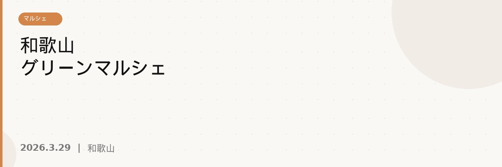

和歌山グリーンマルシェ
イベント概要
和歌山グリーンマルシェは、地域の植物愛好家が集まる春の屋外マルシェです。アガベ、エケベリア、セダムなどの多肉植物から、観葉植物、グリーンアイテムまで、バラエティ豊かな緑が集結します。地元の小規模グリーンショップや個人栽培者による出店で、珍しい品種や限定アイテムが手に入るチャンスです。
春の陽気の中、本町公園の芝生エリアで開催されるため、家族連れやカップルでも楽しめます。各出店者と直接話しながら、植物選びのコツやケア方法についてアドバイスを受けられるのも、マルシェイベントの大きな魅力。初心者から上級者まで、誰もが満足できる植物との出会いがあります。
当日は、園芸用品や植物関連グッズも数多く販売されます。早い時間帯に訪れると、人気品種から順に選べるため、こだわりの一鉢を見つけたい方は開場直後の来園をお勧めします。会場内は自由に移動でき、ゆったりとした雰囲気で植物探しを楽しめます。